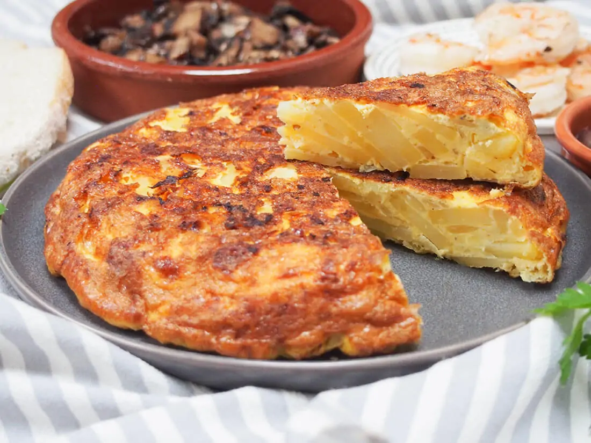

Spanish Tortilla

Description and Ingredients -
The Spanish tortilla, also known as "tortilla española", is a savory omelet made with eggs, thinly sliced potatoes, and sometimes onions. It's a versatile dish, enjoyed warm or cold, as a tapa, snack, or even a main course.
The recipe for Spanish tortilla is a simple yet satisfying process. It involves gently cooking thinly sliced potatoes and onions in olive oil until tender, then mixing them with beaten eggs. The mixture is then cooked in a pan until set, resulting in a golden brown omelet.
Here are the ingredients you'll need:
- 600g potatoes
- 1 medium onion (optional)
- 6-8 eggs
- 1/2 cup extra virgin olive oil
- Salt and pepper to taste
- 1 tbsp Spanish paprika (optional)
Instructions -
- Heat olive oil in a large skillet over medium-low heat. Add the onions and cook until softened and translucent, about 10-15 minutes.
- Add the potatoes and cook for 20-25 minutes, stirring occasionally, until tender and golden brown. It's crucial to cook them over low heat to prevent burning and ensure even cooking.
- While the potatoes cook, beat the eggs in a large bowl and season with salt. You can also add a pinch of paprika for extra flavor at this stage.
- Once the potatoes are cooked, drain any excess oil and transfer them to the egg mixture. Gently fold everything together.
- Wipe the skillet clean with a paper towel and add a thin layer of olive oil. Heat it over medium-low heat.
- Pour the egg and potato mixture into the pan. Tilt the pan occasionally to allow the uncooked egg to reach the bottom. Cook for 5-7 minutes, or until the edges start to set.
- Here comes the fun (and potentially challenging) part: flipping the tortilla. You can use two methods:
- Traditional method: Place a large plate on top of the pan. Carefully invert the pan and plate together, flipping the tortilla onto the plate. Slide the tortilla back into the pan (cooked side up) to cook for another 5-7 minutes.
- Double pan method: Use a second, slightly larger skillet. Carefully slide the uncooked tortilla onto the larger pan. Then, flip the pan with the tortilla onto the original pan to cook the other side for 5-7 minutes.
- Once cooked through, transfer the tortilla to a plate and let it cool slightly before slicing and serving. You can enjoy it warm or at room temperature.
Tips -
- Use a non-stick pan for easier flipping.
- Don't rush the cooking process. Low heat allows the potatoes and eggs to cook evenly.
- Let the tortilla cool slightly before slicing to prevent it from falling apart.